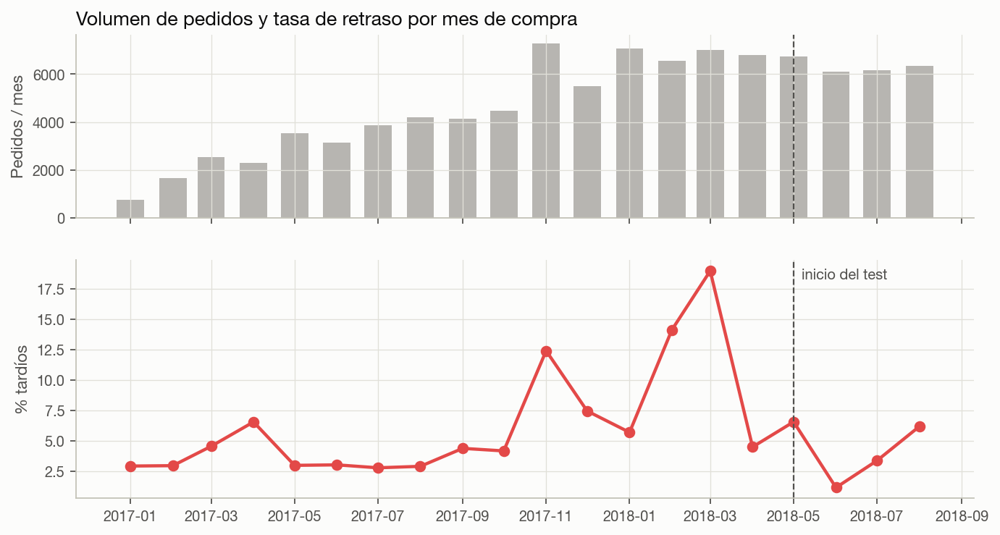
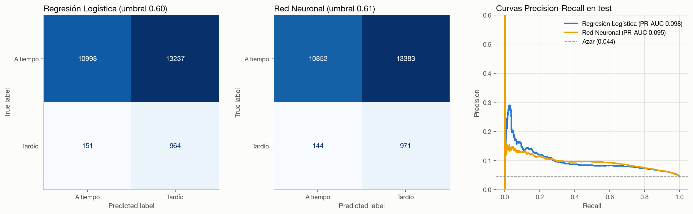
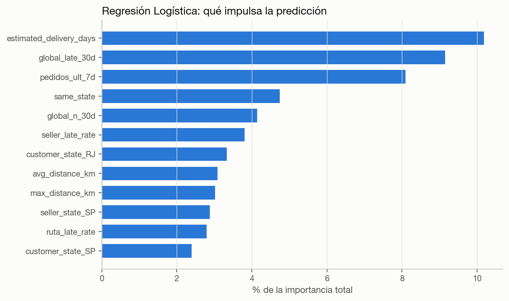

Anticipar el retraso: predicción de entregas tardías en un marketplace de e-commerce con validación temporal sin fuga de información
1. Introducción
En un marketplace, la empresa promete al cliente una fecha de entrega que depende de terceros: el vendedor debe despachar a tiempo y la transportista debe completar la ruta. Cuando la promesa no se cumple, el costo no es sólo logístico: la reseña pública del pedido se deteriora y con ella la reputación del vendedor y la conversión de futuros compradores. Si fuera posible identificar con anticipación los pedidos con mayor riesgo, la empresa podría gestionar la expectativa del cliente o priorizar la operación antes de que el retraso ocurra.
Este trabajo aborda esa pregunta con datos públicos reales de Olist [1]. Sus contribuciones son: (i) un conjunto de variables construidas estrictamente con información disponible al momento de la compra, verificado contra fugas; (ii) un esquema de validación temporal con purga que refleja cuándo se conoce realmente la etiqueta de un pedido; (iii) una comparación controlada de cuatro familias de modelos, cada una con su propia selección de variables y ajuste de hiperparámetros, y (iv) una traducción de los resultados a decisiones operativas.
2. Datos
El conjunto de datos de Olist contiene 99 441 pedidos (septiembre 2016 – octubre 2018) distribuidos en nueve tablas relacionales: pedidos, ítems, pagos, productos, vendedores, clientes, geolocalización por código postal y reseñas. Las reglas de limpieza fueron: eliminar pedidos cancelados o no disponibles (1 234); excluir pedidos sin fecha de entrega (1 737); y excluir pedidos cuya fecha estimada es posterior a la última entrega registrada, para los cuales aún no se podría conocer el resultado (2). Los pedidos de 2016 son escasos y presentan un hueco entre noviembre y diciembre; se usaron sólo como historial para las variables, de modo que el conjunto de modelado contiene 96 201 pedidos a partir de enero de 2017. No se eliminaron valores atípicos, porque los pedidos extremos (muy pesados o lejanos) son precisamente los de mayor riesgo.
Variable objetivo. Un pedido es tardío (delivery_late = 1) si se entregó en un día posterior a la fecha estimada. La fecha
estimada siempre viene a las 00:00, por lo que la comparación se hace por día: un pedido entregado el mismo día prometido cuenta como a tiempo.
Definimos además el instante en que la etiqueta se vuelve conocida, label_conocida_en = min(entrega, estimada + 1 día): un pedido
puntual se sabe al entregarse y uno tardío en cuanto vence su promesa. Esta columna es la base de las variables históricas y de la purga.


3. Metodología
3.1 Variables
Cada pedido se describe con 36 variables agrupadas en ocho familias: promesa de entrega (días prometidos y plazo del vendedor para despachar), tamaño del pedido, características físicas del producto, forma de pago, geografía (estados, distancia de Haversine entre los centroides de los códigos postales), calendario (día de la semana y franja horaria), historial y carga reciente. El mes de compra se descartó porque, con menos de dos años de datos, identifica episodios concretos que el modelo memoriza en lugar de estacionalidad.
Las variables de historial (tasa de retraso del vendedor y de la ruta estado→estado) y de carga reciente (tasa de retraso de las entregas
conocidas en los 30 días previos, global y hacia el estado del cliente, y número de pedidos de los últimos 7 días) son point-in-time: para
un pedido comprado en t sólo cuentan etiquetas con label_conocida_en < t. Las tasas se suavizan hacia un prior con
m = 20 observaciones; a diferencia de una versión anterior del proyecto, el prior es la tasa global conocida hasta t y no la del
periodo de entrenamiento completo, que filtraba información futura hacia los primeros folds. Verificamos la ausencia de fuga recalculando por
fuerza bruta el historial de 300 pedidos aleatorios. Las variables categóricas se codificaron con one-hot (las 20 categorías más
frecuentes en entrenamiento), para un total de 105 columnas.
3.2 Diseño de validación
El periodo de prueba son los pedidos comprados a partir del 2018-05-01 (25 350 pedidos, 4.4 % tardíos); no participó
en ninguna decisión y se evaluó una sola vez. El entrenamiento (68 287 pedidos, 7.59 % tardíos) se dividió en seis bloques
cronológicos para formar cinco folds de ventana creciente: el fold k entrena con los bloques 1…k y valida con el bloque k+1 (Tabla 1).
A diferencia de TimeSeriesSplit, aplicamos purga [9]: un pedido sólo entrena si su etiqueta ya se conocía al inicio del periodo
de validación. Sin ella, los últimos pedidos del entrenamiento tendrían etiquetas que en producción todavía no existirían. Entre entrenamiento y
prueba se purgaron 2 564 pedidos. La imputación (mediana) y el escalado se ajustan dentro de cada fold mediante Pipeline.
| Fold | Periodo de entrenamiento | Filas | Periodo de validación | Filas | % tardíos train | % tardíos val |
|---|---|---|---|---|---|---|
| 1 | 2017-01-05 – 2017-06-04 | 10 167 | 2017-06-06 – 2017-09-06 | 11 381 | 3,84 | 2,93 |
| 2 | 2017-01-05 – 2017-09-05 | 21 236 | 2017-09-06 – 2017-11-22 | 11 381 | 3,23 | 5,32 |
| 3 | 2017-01-05 – 2017-11-19 | 31 841 | 2017-11-22 – 2018-01-10 | 11 381 | 3,51 | 9,96 |
| 4 | 2017-01-05 – 2018-01-09 | 43 040 | 2018-01-10 – 2018-02-28 | 11 381 | 5,33 | 10,74 |
| 5 | 2017-01-05 – 2018-02-26 | 53 307 | 2018-02-28 – 2018-04-27 | 11 381 | 5,33 | 12,56 |

3.3 Modelos, selección de variables e hiperparámetros
Se compararon cuatro modelos: regresión logística con pesos balanceados (línea base), Random Forest [3], XGBoost [4] y un perceptrón multicapa en Keras [5]; los modelos clásicos se implementaron con scikit-learn [2]. Para cada modelo clásico se siguió la misma secuencia: (1) eliminación recursiva de variables con validación cruzada (RFECV [7]), eliminando el 10 % de variables menos importantes por ronda según los coeficientes o la importancia propia del modelo; (2) búsqueda aleatoria de hiperparámetros [8] sobre las variables elegidas. Ambos pasos usan los mismos cinco folds y la métrica PR-AUC. Como una red no ofrece una medida de importancia directa, su selección de variables comparó conjuntos candidatos (todas, el RFECV de cada modelo clásico, su unión y su intersección), seguida de una búsqueda sobre arquitectura, dropout, regularización L2, tasa de aprendizaje y tamaño de lote. El early stopping de la red usa la cola más reciente (15 %) del entrenamiento de cada fold, nunca el fold de validación.
3.4 Métricas, umbral y regla de selección
Con 6,8 % de positivos, la exactitud no es informativa: predecir siempre «a tiempo» acierta más del 93 %. La métrica principal es el área bajo la curva precisión-recall (PR-AUC, average precision) [6], cuyo valor de azar es la tasa de positivos; reportamos también ROC-AUC y precisión, recall y F1 de la clase tardía. El sobreajuste se diagnostica con la brecha de ROC-AUC entre entrenamiento y validación, porque el PR-AUC depende de la tasa de positivos y ésta cambia entre periodos. El umbral de decisión de cada modelo es el que maximiza el F1 sobre sus predicciones fuera de fold. La regla de selección se fijó antes de ver resultados: mayor PR-AUC promedio en validación y, en caso de empate (diferencia menor que 0,005), el modelo más simple (logística, Random Forest, XGBoost, red neuronal).
4. Resultados
4.1 Comparación en validación temporal
La Tabla 2 resume el desempeño en los cinco folds. Los modelos Regresión Logística, Random Forest y XGBoost quedaron a menos de 0,005 de PR-AUC entre sí; por la regla de simplicidad definida antes de ver los resultados, el mejor modelo clásico es Regresión Logística. La red neuronal superó al mejor modelo clásico en validación (PR-AUC 0,190 frente a 0,153). La desviación entre folds es grande para todos los modelos y sigue a la tasa de retraso de cada periodo (Figura 4): los folds con oleadas de retraso son más fáciles de ordenar, y el primero, con menos de 3 % de positivos y sólo cinco meses de historia, es el más difícil.
| Modelo | Variables | PR-AUC val | × azar | ROC-AUC val | ROC-AUC train | Brecha ROC | F1 (OOF) |
|---|---|---|---|---|---|---|---|
| Red Neuronal | 35 | 0,190 ± 0,132 | 2,28 | 0,675 | 0,757 | 0,081 | 0,227 |
| Random Forest | 105 | 0,158 ± 0,091 | 1,90 | 0,660 | 0,867 | 0,207 | 0,270 |
| XGBoost | 35 | 0,157 ± 0,088 | 1,90 | 0,644 | 0,841 | 0,198 | 0,231 |
| Regresión Logística | 65 | 0,153 ± 0,100 | 1,85 | 0,650 | 0,726 | 0,076 | 0,227 |

| Modelo | Variables | Hiperparámetros elegidos |
|---|---|---|
| Regresión Logística | 65 | C = 0,0010; penalty = l2; solver = liblinear |
| Random Forest | 105 | n_estimators = 200; min_samples_leaf = 100; max_samples = 0,8000; max_features = sqrt; max_depth = 12; class_weight = balanced_subsample |
| XGBoost | 35 | colsample_bytree = 0,5000; learning_rate = 0,0772; max_depth = 3; min_child_weight = 20; n_estimators = 200; reg_lambda = 0,1914; scale_pos_weight = 6; subsample = 0,6000 |
| Red Neuronal | 35 (conjunto: RFECV XGBoost) | capas = (64, 32, 16); dropout = 0,1000; l2 = 0,0100; lr = 0,0003; batch = 256 |
4.2 Prueba final
El periodo de prueba se abrió una sola vez para el mejor modelo clásico y la red neuronal (Tabla 4). En prueba ambos modelos resultaron prácticamente equivalentes (PR-AUC 0,098 y 0,095; ROC-AUC 0,716 y 0,729): la ventaja de la red en validación no se sostuvo en el futuro. Los valores absolutos son menores que en validación porque el periodo de prueba tiene menos retrasos (4,4 %); la mejora relativa frente al azar es del orden de 2,2 veces para Regresión Logística y 2,2 para la red. En términos operativos (Tabla 5, Figura 5), revisar el 10 % de pedidos con mayor riesgo permite anticipar el 25 % de los retrasos, y el 20 % de pedidos concentra el 39 %.
El umbral fijo de probabilidad elegido en validación no se transfirió bien: en prueba marca el 56 % de los pedidos, con recall alto (86 %) pero precisión baja (7 %). Esto ocurre porque la tasa de retraso bajó y porque el umbral se eligió sobre predicciones de cinco modelos de fold con escalas de probabilidad distintas. La métrica independiente del umbral (PR-AUC) y la operación por capacidad (revisar el k % de mayor riesgo) son robustas a esa deriva.
| Modelo | PR-AUC CV | PR-AUC test | × azar | ROC-AUC | Precisión | Recall | F1 | Umbral |
|---|---|---|---|---|---|---|---|---|
| Regresión Logística | 0,153 | 0,098 | 2,23 | 0,716 | 0,068 | 0,865 | 0,126 | 0,60 |
| Red Neuronal | 0,190 | 0,095 | 2,16 | 0,729 | 0,068 | 0,871 | 0,126 | 0,61 |

| Pedidos revisados | Tardíos capturados (Regresión Logística) | Precisión | Lift | Tardíos capturados (red) |
|---|---|---|---|---|
| 5 % | 15,6 % | 13,7 % | 3,12 | 14,0 % |
| 10 % | 24,9 % | 11,0 % | 2,49 | 23,8 % |
| 20 % | 39,4 % | 8,7 % | 1,97 | 43,5 % |
| 30 % | 56,1 % | 8,2 % | 1,87 | 62,1 % |
4.3 Variables relevantes
Las variables con mayor peso en Regresión Logística son: días de entrega prometidos (10,2 %), tasa de retraso del sistema (30 días) (9,2 %), pedidos de los últimos 7 días (8,1 %), same state (4,7 %), entregas del sistema (30 días) (4,1 %). El patrón es coherente con el análisis exploratorio: la promesa de entrega, la saturación reciente del sistema y el historial de la ruta y del vendedor explican la mayor parte del riesgo.

5. Discusión
Implicaciones. El modelo no elimina el retraso, pero ordena los pedidos por riesgo con una calidad de alrededor de 2,2 veces el azar, lo que permite concentrar recursos limitados. El umbral es una palanca de negocio: para acciones baratas, como avisar al cliente, conviene un umbral bajo (más recall); para intervenciones costosas, uno alto (más precisión). Proponemos un piloto de alertas proactivas sobre el 10–20 % de pedidos de mayor riesgo, medido con un experimento A/B sobre la proporción de reseñas negativas.
Limitaciones. (i) Deriva temporal: la tasa de retraso varía de 1 % a 19 % entre meses, lo que se refleja en la alta variabilidad entre folds y en la diferencia entre validación y prueba. (ii) Faltan variables exógenas determinantes, como transportista, clima, huelgas o festivos. (iii) La fecha prometida por Olist ya incorpora un margen (el pedido típico llega 12 días antes), por lo que los retrasos restantes son, en buena medida, eventos difíciles de anticipar. (iv) Un umbral fijo de probabilidad es frágil ante la deriva; recomendamos fijar la capacidad de revisión o recalibrar periódicamente. (v) Los mismos folds se usaron para elegir variables, hiperparámetros y umbral, por lo que las métricas de validación son optimistas; por eso reportamos un periodo de prueba aislado. (vi) En iteraciones anteriores del proyecto se consultó el periodo de prueba; la versión final fijó todas las decisiones con validación cruzada antes de evaluarlo.
6. Conclusiones
Con información disponible al momento de la compra es posible anticipar una parte relevante de las entregas tardías de Olist. El aporte principal no es la complejidad del modelo, sino el diseño de evaluación: variables point-in-time, validación temporal con purga y una regla de selección fijada de antemano. Bajo ese diseño, los tres modelos clásicos quedaron empatados y Regresión Logística los representa por simplicidad; la red neuronal fue la mejor en validación, pero en el periodo de prueba ambos fueron equivalentes. Por explicabilidad y costo recomendamos Regresión Logística para un piloto, con la red como modelo retador. Como trabajo futuro proponemos incorporar fuentes exógenas, calibrar las probabilidades para fijar umbrales por costo, modelar también los días de retraso y validar el impacto en un experimento controlado.
Reproducibilidad. El código está organizado en notebooks secuenciales (01_limpieza a 06_seleccion_y_test_final) y
módulos en src/; todos los resultados de este documento se generan automáticamente a partir de sus salidas.
Referencias
[1] Olist. Brazilian E-Commerce Public Dataset by Olist. Kaggle, 2018. https://www.kaggle.com/datasets/olistbr/brazilian-ecommerce
[2] Pedregosa, F. et al. Scikit-learn: Machine Learning in Python. Journal of Machine Learning Research, 12, 2825–2830, 2011.
[3] Breiman, L. Random Forests. Machine Learning, 45(1), 5–32, 2001.
[4] Chen, T. y Guestrin, C. XGBoost: A Scalable Tree Boosting System. Proceedings of KDD, 785–794, 2016.
[5] Chollet, F. et al. Keras. https://keras.io, 2015.
[6] Saito, T. y Rehmsmeier, M. The Precision-Recall Plot Is More Informative than the ROC Plot When Evaluating Binary Classifiers on Imbalanced Datasets. PLoS ONE, 10(3), 2015.
[7] Guyon, I., Weston, J., Barnhill, S. y Vapnik, V. Gene Selection for Cancer Classification using Support Vector Machines. Machine Learning, 46, 389–422, 2002.
[8] Bergstra, J. y Bengio, Y. Random Search for Hyper-Parameter Optimization. Journal of Machine Learning Research, 13, 281–305, 2012.
[9] López de Prado, M. Advances in Financial Machine Learning, cap. 7: Cross-Validation in Finance. Wiley, 2018.
[10] Bergmeir, C. y Benítez, J. M. On the use of cross-validation for time series predictor evaluation. Information Sciences, 191, 192–213, 2012.